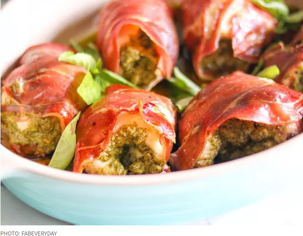

Pesto Chicken

What it is?
It's oven heated chicken that has pesto spread on top of it, and a slice of prosciutto wrapped around it.
Ingredients
- 4 skinless, boneless chicken breast halves
- half a cup of prepared basil pesto
- 4 thin slices prosciutto, or more if needed
Directions
- Preheat oven to 200 degrees celsius. Grease a baking dish.
- Spread about 2 tablespoons of pesto per chicken breast over the top of each breast, and wrap each breast in prosciutto slices to cover the entire breast. Place the wrapped chicken breasts into the prepared baking dish.
- Bake in the preheated oven until the chicken is no longer pink, the juices run clear, and the prosciutto is lightly crisped, about 25 minutes.